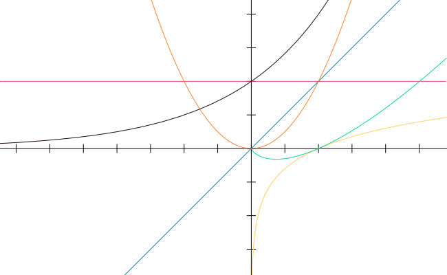
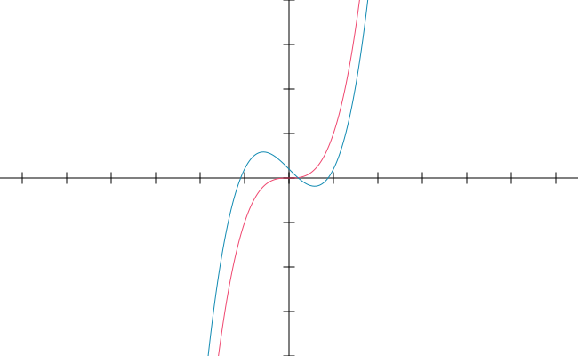

This site consist of thoughts I gathered from different places during my journey with learning algorithms and data structures. I don't want to create redundant resources but only try to add something new that somebody may find helpful.
Algorithm is a recipe, a recipe to success, to achieve a predetermined goal. It says us exactly what to do to acomplish task. We got a step by step instruction and our only job is to blindly follow it.
First example coming to mind can be recipe for cake. We have a problem which is preparing given deliocius cake. Our end goal is finished cake ready to be absorbed and we are left with recipe how to make it. This recipe is our algorithm.
/*
* Problem: bake the cake
* Goal: finished cake
* Algorithm: recipe for this cake
*/
// To be honest don't name recipe as algorithm
// unlike you want to catch few strange glances. :)
Considering data structure we can think of it like a container for raw data. Data structure gives us precise guidelines about method for storing given data. Another interesting fact is that data structures can be nested.
// Raw data: Jack, Jupyter, Sydney
// Data structure (custom object):
const foo = {
name: 'Jack',
surename: 'Jupyter',
city: 'Sydney'
}
But what if we have hundreds of objects like this, how to store them. Use just another data structure to keep them all.
// Data: many of foo's
// Data structure (array):
const baz = [
{
name: 'Jack',
surename: 'Jupyter',
city: 'Sydney'
},
{
name: 'Nick',
surename: 'Seek',
city: 'London'
},
{
name: 'Ellie',
surename: 'Night',
city: 'Paris'
}
]
Computional complexity is universal way to measure performance of algorithms. It allows to focus on real efficiency independent of computer speed. Instead of focusing on measuring time it takes given task to finish we considering sum of operations it need to execute to finish.
For example let's take a look on algorithm which will calculate sum of elements in array:
function sum(array) {
let sum = 0;
for (let number of array) {
sum += number;
}
return sum;
}
So as we can see every time we will call this function first line let sum = 0;
will execute once. Same story regarding last line return sum;. They independly on
input always execute once. Things go different inside for loop. Amount of
executing of sum += number; depends on array length, it's not constant. Having
this information we can come up with function (this time from math) describing
complexity of given algorithm.
This method let us to precisely designate complexity of algorithm but most of the time we are interested only in estimation. Figuring out exact function sometimes can be a lot harded than in our example but when we only want to study computional complexity there is a easier way. We can just use one of 3 types of estimation notations:
These notations are simplifications of exact function. We can allow ourselves to do that because as function grows there is probably one element which has most influence on end result. For example if we consider:
And try to check values of each element using big random value of n we can get following result:
| Element | Value when n = 1 000 |
|---|---|
| n3 | 1 000 000 000 |
| 5n2 | 5 000 000 |
| 56n | 56 000 |
| 10 | 10 |
As we can see as as n becomes higher one element has more significant influence on result value. So in case for simplicity we can consider only this element.

The O notation imply that there exist function g(n) for with result multipled by some constant c will be equal or higher to function f(n). This property is fulfilled for every n higher than n0.
Above graph shows two function blue one is our f(n) = n3 - n + 0.2 and red one is g(n) = n3. As we can see there is a point where these two function intersects, it's n0 point. After this point g(n) is always higher than f(n). This type of estimation is O notation.
Ω notation is estimation where we set a function lesser than f(n).
Θ notation is estimation that in some way sum up O notation and Ω notation. We setting a function which multiplied by constant c1 will be higher or equal f(n) and multiplied by constant c2 will be lesser or equal f(n).
Search for value by iterating through whole array.
function linearSearch(value, array) {
for (let i = 0; i < array.length; i += 1)
if (array[i] === value) return i;
return -1;
}
There is only one for loop so we can easily say that computional complexity of this algorithm equal O(n).